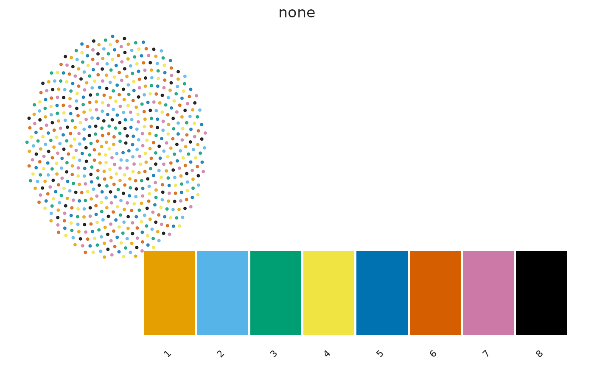
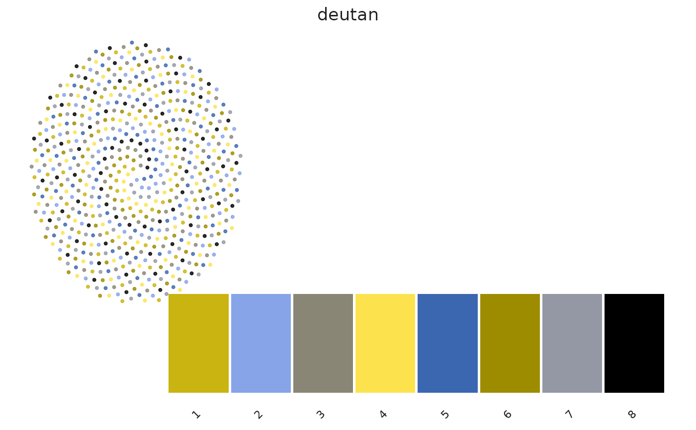
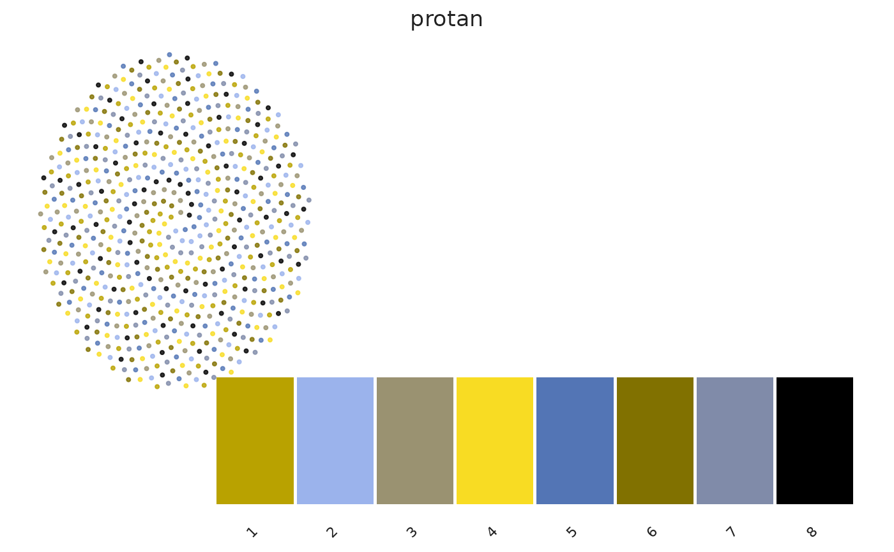
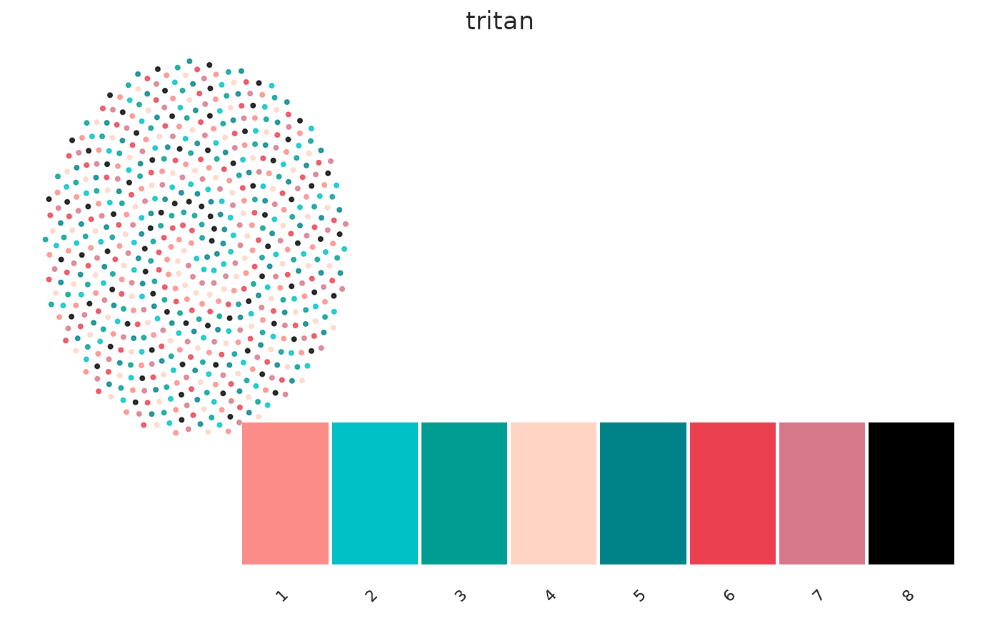

Plot palette swatches or dense point previews
Usage
sc_palette_plot(
x,
n = NULL,
view = c("swatch", "points", "both"),
background = c("light", "dark"),
cvd = c("none", "deutan", "protan", "tritan"),
labels = TRUE
)
Arguments
- x
Palette ID, color vector, or sc_color_map.
- n
Optional number of colors for a palette ID.
- view
Swatches, points, or both.
- background
Light or dark background.
- cvd
One or more vision simulations.
- labels
Label swatches.
Value
A ggplot object for one CVD view, otherwise a named list of plots.
Examples
sc_palette_plot("okabe_ito", view = "both")
#> $none

#>
#> $deutan

#>
#> $protan

#>
#> $tritan

#>